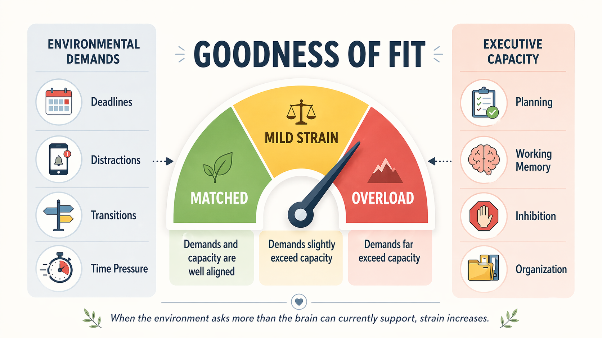
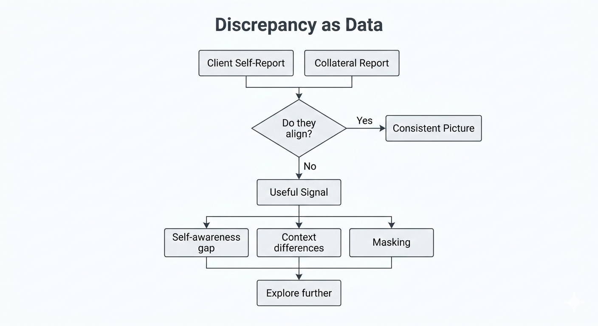
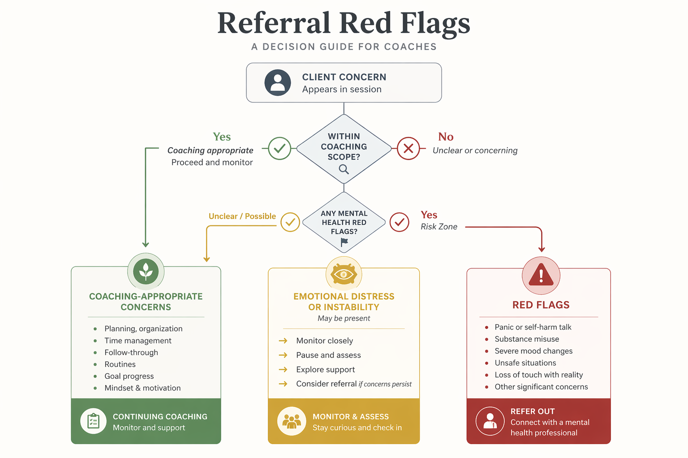

Assessment Protocols & Intake Strategy
Transitioning from theory to diagnostics. Learn to assess functional impairment through structured interviews, self-report questionnaires, and performance audits.
Module Overview
While coaches do not diagnose pathology, they must assess functional impairment to tailor their interventions. This module relies heavily on the work of Dawson and Guare to structure the assessment process.
Key Distinction
Coaches assess functional impairment, not clinical pathology. The goal is not diagnosis but understanding how the client's executive skills interact with their environmental demands — what Dawson and Guare call the "Goodness of Fit."

The Intake Architecture
The intake session is the most critical hour of the coaching engagement.
Data Gathering
Structured questionnaires to identify the client's history, interests, strengths, and challenge areas. Look for patterns of "strong starts and poor finishes."
Rapport Building
Creating a "shame-free zone" where missed tasks are data points for problem-solving, not moral failings. Establishing the collaborative alliance.
Goodness of Fit
Problems arise when the demands of the environment exceed the client's executive skills. The intake must identify both the skill deficits and the environmental demands.
The "Getting to Know You" Protocol
An effective intake uses a structured questionnaire to probe key areas:
Academic/Career History
Looking for patterns of "strong starts and poor finishes" or specific areas of difficulty that point to underlying EF deficits.
Bio-Regulatory Factors
Sleep, nutrition, and exercise. Research indicates that EF reserves are depleted by fatigue and stress — these must be assessed first.
Islands of Competence
Where does the client succeed? (e.g., video games, sports, art). This reveals that EF is context-dependent and still very present.
The Executive Skills Questionnaire (ESQ-R)
The ESQ-R is the Institute's primary public-facing intake survey. In the current Dawson/Guare manual, it is a 25-item self-report survey summarized into five executive-skill areas derived from the broader executive-skills framework.
Try the Interactive ESQ-RScoring and Interpretation
The ESQ-R reports five skill-area scores plus an overall score. Coaches can then review both the broader pattern and any individual items that stand out as clear strengths or challenge areas.
Strengths-Based Coaching
Always share the strengths first. "You have excellent Flexibility and Stress Tolerance." This reduces defensiveness when discussing weaknesses like "Planning and Organization are your challenge areas."

Discrepancy Analysis
Look for discrepancies between the client's self-report and the report of a parent or teacher. A student might rate their Organization as high because they "know where everything is" in their messy room, while the parent rates it low.
This discrepancy is a coaching opportunity for Metacognition.
Advanced Metrics
BRIEF-2: Coaches can learn the major BRIEF-2 index structure (including BRI, ERI, and CRI) so they can understand reports generated in qualified assessment settings. Elevated scores can help frame areas needing support, but the BRIEF-2 itself remains a proprietary clinical/educational measure.
Brown EF/A Scales: These proprietary scales describe executive-function patterns across age bands and can add useful descriptive language when a qualified professional has already used them. ExEF references them as part of the assessment landscape rather than as a free institute tool.
The "Point of Performance" Audit
Following Barkley's guidance, the coach must assess the environment. Questionnaires capture perception, but audits capture reality.
The Digital Audit
Have the client share their screen. Open their LMS (Canvas/Blackboard). How many missing assignments are there? What does their Google Drive look like? Is it one folder titled "Stuff"?
- Review email inbox organization
- Check calendar usage (or lack thereof)
- Examine file naming and folder structure
- Assess notification management
The Physical Audit
If reviewing submitted workspace photos or notes, check for clutter load, visible clocks/timers, and distraction sources before finalizing the intervention plan.
- Workspace organization and clarity
- Presence of analog clock and timers
- Location of "launch pad" for essentials
- Distraction sources and barriers
Assessment Across Real Support Environments
Executive function assessment does not happen only in private coaching. It also shows up in universities, disability offices, academic support centers, and formal accommodations systems.
Higher Education Coaching Models
University programs increasingly use executive function coaching rather than content tutoring alone. The strongest models combine self-assessment, accountability, environmental review, and explicit strategy training.
- Stanford-style neurodiversity coaching without excessive intake barriers
- Appreciative advising that frames students as capable, not deficient
- Academic success coaching centered on time management, planning, and digital organization
- Targeted scaffolds for first-generation and high-support-transition students
Accommodations and Memory Aids
Formal support systems often include memory aids, cue sheets, workflow templates, and testing accommodations. Coaches should understand these supports even when they are not the ones authorizing them.
- Cue sheets that trigger retrieval without giving answers
- Scaffolded task and writing templates
- Digital workspace audits tied to accommodation planning
- Clear referral boundaries when documentation or diagnosis is required
Coaching Implication
A strong assessor does more than identify weak skills. They identify which supports already exist in the client's environment, which supports are missing, and which barriers are structural rather than personal.
The Goodness of Fit Intake Protocol
The ExEF proprietary intake framework. Every question exists to locate the gap between the client's executive skills and the demands of their environment.
The Four Domains
A complete Goodness of Fit intake covers four domains in sequence. The order matters — earlier domains inform how you interpret later answers.
1. Demand Mapping
What does this client’s week actually require of them? List the five most cognitively loaded tasks of a typical week, in the client’s own words.
Sample prompts: “Walk me through last Tuesday hour by hour.” “Which tasks this week made you feel most behind?”
2. Skill Inventory
What EF skills are strong, weak, and context-dependent? Use the ESQ-R scores as a starting point, then triangulate with specific examples.
Sample prompts: “Give me an example of a time you started something difficult without external pressure.” “When does your planning work well? When does it fall apart?”
3. Environmental Scan
What in the environment helps or hurts? Physical workspace, digital tools, social accountability, bio-regulatory factors (sleep, movement, food, meds).
Sample prompts: “Where do you do your best work? What’s different about that space?” “What time of day are you sharpest?”
4. Motivation & Meaning
What does the client want, and why does it matter to them? Without this, coaching plans stall at week three.
Sample prompts: “If we fixed this, what would a good Tuesday look like six months from now?” “Whose life changes besides yours?”
The Red / Yellow / Green Flag Decision Tree
As you run the intake, every answer is sorted into one of three lanes. This controls what happens at the end of the session.
Green — Coach
Functional EF challenge within scope. Clear environmental or skill-based target. Client has insight and agency. Proceed to contracting.
Yellow — Coach with caveats
Coaching-appropriate, but complicated by sleep deprivation, unmanaged ADHD, active life stressor, or low insight. Contract narrowly. Flag for re-evaluation in 4 weeks.
Red — Refer
Active mental health crisis, suicidality, untreated clinical condition, substance use, or request for diagnosis. Stop. Refer. Document. See scope-of-practice reading.
Scripted language for each lane
Green: “Based on what you’ve shared, this sits squarely in what coaching can help with. Let me propose a starting structure.”
Yellow: “I think we can do meaningful work here. I want to name two things that could shape what’s realistic — [sleep / stressor / untreated Dx]. Can we build those into the plan?”
Red: “What you’re describing is outside what coaching is built for, and I’d be doing you a disservice to pretend otherwise. The right next step is [specific referral]. I’m happy to reconnect once that support is in place.”
Intake Session Mechanics
How to run the 60-minute hour so the Goodness of Fit data actually gets collected — without the session collapsing into free-form venting.
The 60-Minute Agenda
0–5 min — Frame
Confirm consent, recording, confidentiality limits. Name the shape of the hour out loud.
5–15 min — Demand Mapping
“Walk me through last week.” Capture in client’s language. Do not interpret yet.
15–30 min — Skill Inventory
Review ESQ-R scores together. Ask for one concrete example per skill area — strengths first.
30–45 min — Environmental & Bio-Regulatory
Digital audit (share screen if comfortable), workspace, sleep, movement, nutrition, meds. Normalize all of it.
45–55 min — Goals & Meaning
“If we fixed this, what changes?” Draft 2–3 initial goal candidates together, not for them.
55–60 min — Contract or Refer
Apply the flag decision tree. State the lane out loud. Confirm next step.
Rapport & the Shame-Free Zone
Many clients arrive with years of "why can't you just..." in their ears. Your first ten minutes either dismantle that or reinforce it.
Three moves that signal safety:
- Name the pattern before they have to. “A lot of people I work with describe knowing exactly what to do and still not starting. That’s a real thing, not a character flaw.”
- Refuse moral framing. Replace “I was lazy” with “the task didn’t start.”
- Treat missed tasks as data, out loud. “That’s useful information — tells us the trigger conditions aren’t right yet.”
Informed Consent & Contracting
Coaching is not therapy. Clients need to hear that clearly, at the start, in language they can repeat back.
Consent checklist:
- Scope: what coaching is and is not
- Confidentiality and its limits (imminent harm)
- Recording / note-taking practice
- Cadence, cost, cancellation policy
- Explicit right to stop coaching at any time
- Referral relationship if a clinician is involved
Two common intake failures
1. The therapy drift. The client opens a deep emotional thread and the coach follows it for 40 minutes. You end the hour with rapport and no data. Fix: “That matters, and I want to come back to it. For the next 15 minutes I need to pull on a few specific threads so I can actually help.”
2. The survey march. The coach works through the questionnaire mechanically, never leaves the script, never asks “tell me more.” You end the hour with data and no relationship. Fix: Pick two answers per domain that surprised you and ask about them.
Synthesizing the Assessment
Turning ESQ-R scores, intake data, and environmental observations into a single document the client can see themselves in — the EF Profile Summary.
The EF Profile Summary — Template
A two-page document produced within 72 hours of intake. Shared with the client. Revised at the 6-week mark.
Section 1 — Snapshot (1/4 page)
Client name, date, coach, review date. One-sentence presenting concern in the client’s own words.
Section 2 — Executive Profile (1/2 page)
ESQ-R five-area visual + one-line description of each area. Strengths first. No jargon.
Section 3 — Goodness of Fit Analysis (1/2 page)
Where do the demands currently exceed the skills? Two or three concrete gaps, each tied to an intake example.
Section 4 — Environmental & Bio-Regulatory Notes (1/4 page)
Sleep, movement, nutrition, meds, workspace, digital tools. Flag one thing to protect, one thing to adjust.
Section 5 — Initial Coaching Plan (1/2 page)
Three SMART-ish goals. Each one names: the skill, the environment, the metric, and the first experiment.
Section 6 — Flags & Referrals
Green / Yellow / Red lane named out loud. Any standing referrals or external supports.
The two-reader test
A well-written EF Profile Summary passes two reads: (1) the client can read it without feeling reduced to a list of deficits, and (2) a supervising coach can read it cold and know exactly what work is about to happen and why.
Module 2 Graded Deliverable
This is the module that carries the weight of the certification’s assessment competency. The external prerequisite course sets the floor; this deliverable is where you demonstrate you can actually do the work.
Assignment 2.1: The Full Intake Cycle
Objective: Conduct, document, and synthesize a complete EF coaching intake from first contact through written profile.
Task (estimated 4–6 hours):
- Recruit a volunteer (not a current therapy or medical client of yours)
- Obtain informed consent in writing using the ExEF consent template
- Administer the ESQ-R and score it
- Conduct a recorded 60-minute intake following the Unit 2.5 agenda
- Apply the Red / Yellow / Green flag decision tree and state the lane on-record
- Produce the two-page EF Profile Summary (Unit 2.6 template)
- Submit a 1-page self-reflection: what went well, what you’d do differently, where you drifted
Submission: recording (or transcript with consent), signed consent form, ESQ-R scoring sheet, EF Profile Summary, self-reflection.
Evaluator Rubric
Each row is scored 0–3. You must score 2 or better on every row and 14+ total to pass. Evaluators return written feedback within 10 business days.
| Criterion | 0 — Not demonstrated | 2 — Competent | 3 — Strong |
|---|---|---|---|
| Consent & scope framing | Missing or implicit; scope conflated with therapy. | Consent obtained; scope named clearly. | Client demonstrably understands scope and can restate it. |
| Demand mapping | No concrete weekly picture captured. | Client walks through a real week with specifics. | Coach probes for EF-relevant detail and catches at least one pattern in-session. |
| ESQ-R use | Not administered or not discussed. | Scored correctly; shared with client; strengths named first. | Triangulated against at least one intake example; discrepancy used as coaching data. |
| Environmental / bio-regulatory | Skipped or surface only. | Covered workspace, sleep, movement, nutrition, meds. | Digital or physical audit performed; one protect / one adjust target named. |
| Flag decision tree | Lane not named; or mis-assigned (esp. red missed). | Lane stated on-record with rationale. | Lane rationale ties to specific intake evidence; referral wording matches scope. |
| EF Profile Summary | Missing sections; deficit-only framing; jargon-heavy. | All six sections present; readable by the client. | Passes the two-reader test; goals tie skills to environment and metric. |
| Self-reflection | Surface or self-congratulatory. | Names at least one specific drift and one fix. | Identifies a pattern likely to recur and a structural adjustment. |
Why this deliverable carries more weight here
The external course options for EF-specific assessment are limited. The certification’s assessment competency therefore rests primarily on the ExEF curriculum above and on this graded intake cycle. Evaluators are instructed to hold a higher bar on Module 2 than on modules with stronger external prerequisites.
Required Readings & Viewings
- Dawson/Guare Executive Skills Questionnaire (ESQ-R)
- BRIEF-2 Overview — Behavior Rating Inventory of Executive Function
- Brown EF/A Scales Summary Report
- Executive Functioning Coaching Intake Form Templates
- Best Practices in Assessing and Improving Executive Skills (Dawson)
- Stanford Center for Teaching and Learning - Neurodiversity Coaching
- Santa Clara University - Executive Function Coaching
- UCLA - Memory Aids on Exams
- San Francisco State University - Tutoring and Academic Support
Intake Coaching Decision
Work through a realistic intake situation. Your decisions affect what happens next.
Situation: A new client, Jamie, has just completed the ESQ-R self-report. Their scores show significant deficits in Task Initiation and Time Management, but relatively strong Working Memory. During the intake call, Jamie says: "I know exactly what I need to do — I just can't make myself start."
What is your priority as the intake coach?

Practice Scenarios
Apply what you learned. Each scenario presents a real assessment or intake decision. Choose your response and see how it holds up against EF coaching principles.
Want Your Intake Protocol Reviewed?
Module 2 teaches assessment and intake strategy. The paid path adds evaluator scoring on your intake simulation, feedback on your functional assessment write-ups, and progress tracking toward certification.
See Assessment Review Options